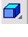
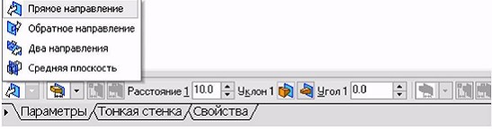
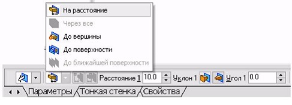
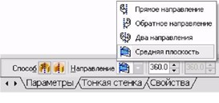
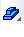
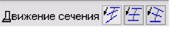
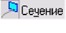
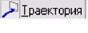
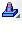
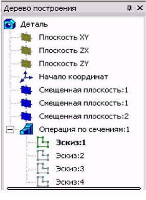

Формотворне переміщення ескізу, у результаті якого утвориться об'ємний елемент, називається операцією. Система КОМПАС має чотири операції: Видавлювання, Обертання, Кінематична і По перетинах.
Команда Видавлювання
Команда Видавлювання дозволяє створити основу деталі, що представляє собою тіло видавлювання. Тіло видавлювання утвориться шляхом переміщення ескізу в напрямку, перпендикулярному його площині. Команда доступна, якщо виділено один ескіз. Для виклику команди натисніть кнопку  Операція видавлювання на інструментальній панелі редагування деталі або виберіть її назву з меню Операції.
Задайте напрямок, у якому потрібно видавлювати ескіз: Прямий напрямок, Зворотний напрямок, Два напрямки й Середня площина (рис. 5.8). Виберіть варіант визначення величини видавлювання зі списку Спосіб: На відстань, Через все, До вершини, До поверхні, До найближчої поверхні
Вікно вибору напрямку видавлювання
Вікно вибору величини видавлювання
Вибір варіанта На відстань означає, що видавлювання може вироблятися тільки на задану відстань. Вибір варіанта Через все означає, що величина видавлювання визначається автоматично: ескіз видавлюється до грані, найбільш вилученої від площини ескізу в напрямку видавлювання. Варіант До вершини означає, що глибина видавлювання визначається автоматично по положенню зазначеної користувачем вершини. При цьому площина, що обмежує елемент, який видавлюється, повинна «заходити» за вершину або «не доходити» до неї на задану відстані. При виборі варіанта До вершини потрібно вказати цю вершину у вікні деталі. Вибір варіанта До поверхні означає, що глибина видавлювання визначається автоматично після вказівки користувачем відповідної поверхні. При цьому поверхня, яка обмежує елемент, повинна «заходити» за поверхню або «не доходити» до неї на задану відстань. Форма «торця» елемента повторює форму зазначеної поверхні. При виборі варіанта До поверхні потрібно вказати цю поверхню (площина, грань) у вікні деталі (зазначена поверхня підсвічується). Якщо зазначена грань криволінійна, проекція ескізу, що видавлює, повинна повністю належати цій грані.
Команда Операція обертання
Команда Операція обертання дозволяє створити модель деталі, що представляє собою тіло обертання. Команда доступна, якщо виділено один ескіз. Для виклику команди натисніть кнопку (Операція обертання) на інструментальній панелі редагування деталі або виберіть її назву з меню Операції.Група перемикачів Спосіб на вкладці Параметри Панелі властивостей дозволяє вибрати спосіб побудови тіла (тороїд або сфероїд), якщо обертається не замкнений контур.
Вибір способу побудови тіла обертання
Указавши напрямок обертання контуру, потрібно вибрати рядок у списку Напрямок: Прямий напрямок, Зворотний напрямок, Два напрямки й Середня площина. Потім задайте кут, на який буде вироблятися обертання. Для обертання у двох напрямках кут потрібно ввести двічі - для прямого й зворотного напрямку. Якщо був обраний варіант Середня площина, то кут задається один раз. Він сприймається системою як загальний кут, тобто в кожну сторону відкладається його половина.Керування побудовою тонкостінних елементів здійснюється на вкладці Тонка стінка Панелі властивостей.Спосіб завдання товщини стінки вибирається зі списку Тип побудови тонкої стінки. Вибір варіанта Немає означає відмова від створення тонкої стінки. Для завдання товщини введіть потрібне значення в поле Товщина стінки. Якщо обрано створення тонкої стінки у двох напрямках, товщину потрібно ввести двічі (для напрямків усередину й назовні). Зміна товщини стінки або способу її визначення відображається на фантомі елемента у вікні деталі. Це дозволяє оцінити правильність завдання параметрів стінки і при необхідності відкоригувати їх.Настроювання властивостей поверхні елемента здійснюється так само, як і при видавлюванні.Приклад моделі половини кулі, отриманої в результаті обертання половини кола у двох напрямках на 90°, показаний на малюнку.
Команда Кінематична операція
Ця команда дозволяє створювати модель деталі, що представляє результат переміщення ескізу (утворюючої) уздовж обраної траєкторії. При побудові кінематичної поверхні використаються як мінімум два ескізи: в одному з них зображується утворююча кінематичного елемента (кінематичної поверхні), в інших - траєкторія руху перетину. Ці ескізи задають визначник Кінематичної операції. В ескізі - перетині (утворюючої) перебуває тільки один контур, який може бути розімкнутим або замкнутим. Якщо траєкторія (напрямна) складається з одного ескізу, повинні виконувати наступні умови:
• в ескізі-траєкторії може бути тільки один контур;
• контур може бути розімкнутим або замкнутим;
• у розімкнутому контурі його початок повинне лежати в площині ескізу перетину;
• у замкнутому контурі він повинен перетинати площина ескізу-перетину.
Якщо траєкторія складається з декількох ескізів, повинні виконуватися наступні умови:
• у кожному ескізі-траєкторії може бути тільки один контур;
• контур повинен бути розімкнутим;
• контури в ескізах повинні з'єднуватися один з одним послідовно (початкова крапка одного збігається з кінцевою крапкою іншого);
• якщо ескізи утворять замкнуту траєкторію, то вона повинна перетинати площина ескізу-перетину;
• якщо ескізи утворять незамкнуту траєкторію, то її початок повинне лежати в площині ескізу-перетину.
Для виклику команди натисніть кнопку  (Кінематична операція) на інструментальній панелі редагування деталі або виберіть її назву з меню Операції. Група перемикачів  (Рух перетину) дозволяє вибрати один із трьох типів переміщення перетину уздовж траєкторії: Зберігати кут нахилу, Паралельно самому собі й Ортогонально траєкторії. Для вказівки параметрів виконання операції варто натиснути кнопку  (Перетин), потім визначити траєкторію, натиснувши кнопку  Побудова тонкостінного кінематичного елемента і налагодження властивостей поверхні елемента нічим не відрізняється від розглянутих вище операцій видавлювання і обертання.
Команда Операція по перетинах
Команда Операція по перетинах дозволяє створити деталь, указавши декілька його перетинів, зображених у різних ескізах. Якщо необхідно, можна вказати напрямну - контур, який задає напрямок побудови елемента по перетинах. Команда доступна, якщо в деталі існує хоча б два ескізи. Вимоги до ескізів елемента по перетинах наступні:
• ескізи можуть бути розташовані в довільно орієнтованих площинах;
• ескіз початкового (кінцевого) перетину може містити контур або крапку;
• ескіз проміжного перетину може містити тільки контур;
• контур в ескізі може бути тільки один
• контури в ескізах повинні бути або всі замкнуті, або всі розімкнуті.
Вимоги до ескізу осьової лінії (напрямної) наступні:
• в ескізі може бути тільки один контур;
• контур може бути розімкнутим або замкнутим;
• контур повинен перетинати площини всіх ескізів;
• ескіз повинен лежати в площині, не паралельній площинам ескізів перетинів.
Для виклику команди натисніть кнопку  (Операція по перетинах) на інструментальній панелі редагування деталі або виберіть її назву з меню Операції. Щоб задати перетин елемента, натисніть кнопку Перетин на вкладці Параметри Панелі властивостей і вкажіть потрібні ескізи в Дереві побудови або у вікні моделі.
Вибір ескізів у Дереві побудови